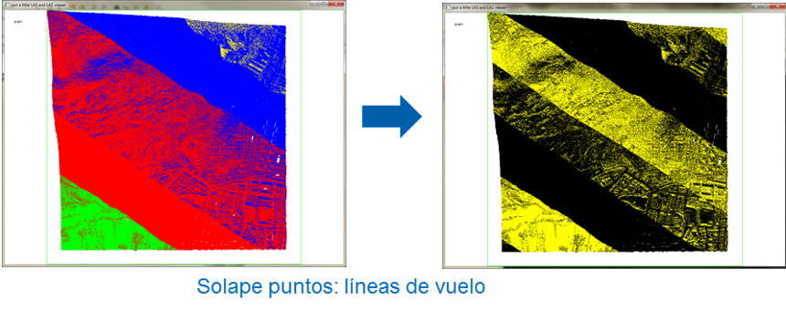
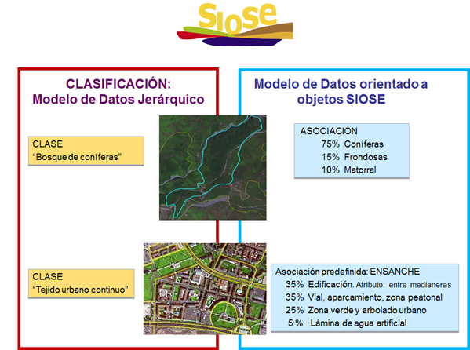
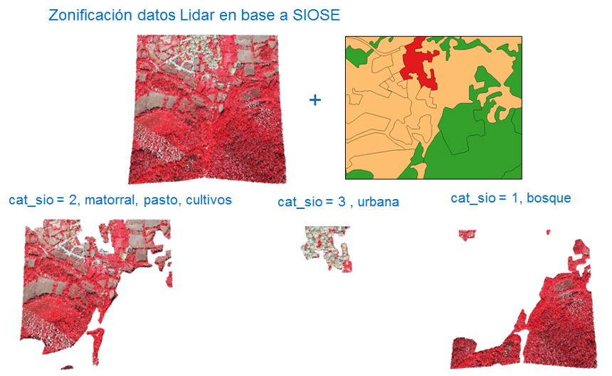

Analysis and treatment of LiDAR data
The analysis and treatment of LiDAR data refers to the whole automatic processes that allow the filtering of overlap points between passes, the identification and filtering of noise points and the automatic classification algorithms.
The classification methodology proposed is divided into three phases: the first consists in the segmentation of the LAS files according to a simplification of the SIOSE categories (The Spanish Land Use and Land Cover Information System), the second is based on the classification of the cloud of points and the third is based on the calculation of vegetation indexes as an improvement of the classification.
Operations before the classification processes:
-
Duplicate points are eliminated in the points cloud:
lasduplicate -i [directory][file-name].laz -unique_xyz -olaz -odir [directory]
-
The LAS files are tessellated or tiled in tiles 1x1 km wide and high:
It is important to tile the files to keep the number of points per file at a reasonable value, in order to use the main memory in the most efficient way and to have the opportunity to take advantage of parallel processing.
Before processing and in order to avoid edge artifacts, the tiles are created by applying a buffer.
lastile -i [directory][file-name].laz -cores 8 -buffer 50 -tile_size 1000 -reversible -odir [directory] -olaz
-
Detection and identification of overlap points to obtain a more constant points cloud.
Excess points are classified in category 12:
lasoverage -i [directory][file-name].laz -step 1 -odir [directory] -olaz

-
Detection and classification of noise points according to the intensity values, and if the points are isolated in the points cloud.
Search for points that have five or fewer points around a 3 x 3 x 3 mesh (with the respective point in the center of the cell), where each cell is four meters in size:
lasnoise -i [directory] [file-name].laz -olaz -step 4 -isolated 5 classify_as 7 -classify_intensity_below_as 5 7 -odir [filename]
Classification process:
-
SEGMENTATION OF LiDAR FILES BASED ON SIOSE CATEGORIES
SIOSE Land Occupation Information System of Spain, is a database of land cover in Spain at a scale of 1: 25.000.

For a better adjustment of the necessary parameters in the land use classification process, we carry out a segmentation of the LiDAR files based on the following simplified SIOSE categories:
- Forest (1)
- Scrub, grass, meadow, arable crops and tree crops (2)
- Urban (3)
- Isolated houses (4)
- Rocky areas (5)
- Industrial (6)
- Water (7)
An FME process has been designed to change the simple and composite coverage provided by the SIOSE data model, to the simplified SIOSE categories, and to segment the LiDAR points cloud based on this new categorization.

You can consult the details and the code of the process in the section Workbenchs > SIOSE zoning
-
DETECTION AND CLASSIFICATION OF GROUND POINTS
The points of the LAS files are classified automatically in ground points and non ground points, according to the classification algorithm implemented in the LAStools tool.
The classification process is based on the progressive reconstruction of the land.
A first approximation of the surface is established from some of the lower cloud points. From this first approach, a criterion is established (angle and distance) that, if complied with, allows an additional point to be added to the surface:
lasground -i [directory][file-name].laz -odir [directory] -olaz -step [n] -stddev [n] -offset [n] -spike [n] -ignore_class 7 12
Definition of parameters for the lasground command based on the simplified SIOSE categories:
Clase Step Spike Offset Standard deviation Forest (1) 5 0.50 0.20 1 Flat terrain (2) 10 1 0.05 1 Urban city (3) 25 0.50 0.05 1 Urban (town) (3) 10 1 0.05 1 Isolated houses (4) 8 1 0.05 1 Rocky areas (5) 10 1 0.05 1 Industrial (6) 30 0.50 0.05 1 Then the heights of the points are calculated with respect to the ground points:
lasheight -i directory][file-name].laz -classify_below -0.5 7 -classify_above 100.0 7 -classify_between 0 0.5 3 -classify_between 0.5 3 4 -classify_between 3 100.0 5 -ignore_class 7 12 -store_in_user_data
The points of the LAS files are classified automatically in points of 'low vegetation', 'medium vegetation', 'high vegetation' and 'constructions':
lasclassify -i [directory][file-name].laz -odir [directory] -olaz -step [n] -planar [n] -ground_offset [n] -ignore_class 7 12
Definition of parameters for the
lasclassifycommand based on the simplified SIOSE categories:
Clase Step Planar Ground Offset Bosque (1) 2 0.40 2 Terreno llano (2) 3 0.10 2 Urbana city (3) 2 0.10 2 Urbana (town) (3) 2 0.10 2 Casas aisladas (4) 2 0.10 2 Roquedos (5) 3 0.10 2 Industrial (6) 2 0.30 3 These three processes are included for execution within a workbench, whose details and code can be consulted in the section Workbenchs > LiDAR Classification
-
CALCULATION OF THE NORMALIZED DIFFERENCE VEGETATION INDEX (NDVI), HOW TO IMPROVE THE CLASSIFICATION
A Normalized Difference Vegetation Index (NDVI), is a combination of spectral bands captured by a sensor. It allows to discriminate covers that have a different reflective behavior between two or more bands of the electromagnetic spectrum.
The NDVI is one of the most used when estimating the quantity, quality and development of the vegetation. It is calculated by means of visible and near infrared light reflected by the vegetation. The calculation of this index is done with reflectivities, but when it is not necessary to grant a physical value to the results, the digital levels are used directly.
The following expression is used:
NDVI= (IRC-R))/(IRC+R)where: IRC is the near infrared response and R is the response in red.
The NDVI values vary between -1 and 1. The following are the approximate values of the NDVI for the different types of covers, which will serve to establish the classification thresholds:
NO VEGETATION
Water Beach Roads Paths Buildings < 0 < 0.05 < 0.10 < 0.15 < 0.10 VEGETATION
Burned area Dunes Grass Wooded Golf course < 0.10 0.10 - 0.20 0.20 - 0.30 0.30 - 0.40 0.50 The vegetation index has been used as an improvement of the classification obtained in the classification process.
To do this, a series of classification conditions are defined as a decision tree that allows erroneously assigned classification values to be corrected.
The implementation of the decision tree has been carried out in a project in FME.
Example of condition: For urban points (6), wrongly classified.
clasificación = 6 && ndvi > 0.2 && height >=0 && height < 0.5It is reclassified in 'low vegetation' (3)
Subsequent operations to the classification processes:
-
Tile union of 1x1 km in the original 2x2 km grids in LAS format.
The union of 1x1 km tiles to generate 2x2 km squares is done through a process in FME.
The LAS files corresponding to the grid are loaded and then joined. Subsequently, a cut is made with the corresponding grid sheet, in order to eliminate the buffer zone incorporated in the tiling process.
In this way, all the LAS files (2x2 km) are finally obtained and classified according to the classification proposed by the American Society for Photogrammetry and Remote Sensing (ASPRS):
Classification Values 0 Created, never classified 1 Unclassified 2 Ground 3 Low Vegetation 4 Medium Vegetation 5 High Vegetation 6 Building 7 Low Point (noise) 8 Model Key-point (mass point) 9 Water 10 Reserved for ASPRS Definition 11 Reserved for ASPRS Definition 12 Overlap Points 13-31 reserved for ASPRS Definition You can check the details and the process code in the section Workbenchs > NDVI Improvement